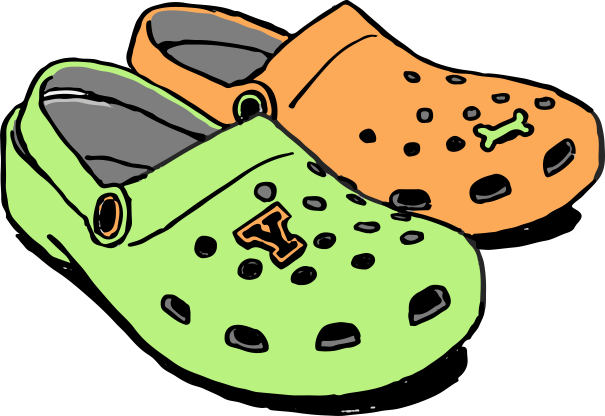

Crocs, Inc., is a Colorado maker of unique clogs that became extremely popular in the early 2000s with both men and women. Originally intended for use on boats and in other outdoor activities like hiking, fishing, and gardening, Crocs has also found a market with working people who spend a lot of time in their feet, such as health care and restaurant workers.
In some circles, essentially younger girls, these straps are traded among wearers to provide a different look. Because of their broad appeal, Crocs are available through numerous distribution channels: traditional footwear retailers, sporting goods and outdoor retailers, department stores, uniform suppliers, specialty food retailers, gift shops, health and beauty stores, and catalogs.
Crocs was founded by Lyndon "Duke" Hanson, and George Boedecker Jr. to produce and distribute a foam clog, the design of which was acquired from a company called Foam Creations. The shoe was originally developed as a boating shoe. The first model produced by Crocs, the Beach, was unveiled in 2001 at the Fort Lauderdale Boat Show in Florida, and sold out the 200 pairs produced at that time. It has since sold 300 million pairs of shoes.
The Crocs™ brand stands for innovation, fun and comfort for people who want shoes that conform to their personalities and lifestyles, as well as to their feet. Now in more styles and in more places for more occasions than ever before, Crocs™ is taking a big step forward in providing intuitive comfort to feet everywhere.
The Crocs™ brand stands for innovation, fun and comfort for people who want shoes that conform to their personalities and lifestyles, as well as to their feet. Now in more styles and in more places for more occasions than ever before, Crocs™ is taking a big step forward in providing intuitive comfort to feet everywhere.
"Crocs offer more protection for your feet than flip-flops," says Glickman. "Flip-flops don't provide a lot of arch support; they're open-toed so you can stub your toe and hurt yourself. Crocs offer more protection and comfort than that." Baravarian says Crocs have more positive attributes than negative, but they're no substitute for the real deal.
Considered a therapeutic shoe, Crocs provide long-term relief from foot pain and is an ideal footwear alternative for people who have had foot surgery or people who have certain health conditions. Dr. Toole uses Crocs in her daily practice and advises her patients who have had foot surgery to wear them following surgery.